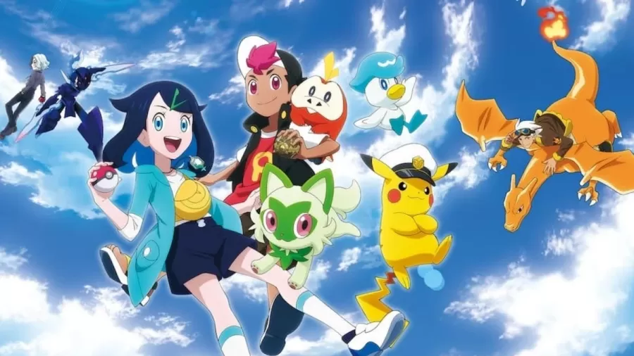

Sem Ash, 'Pokémon: Horizontes' tenta perpetuar a franquia e recuperar fãs
por Fábio Garcia - 02/03/2024
Toda jornada tem um fim, e a de Ash e Pikachu em "Pokémon" acabou após 1.234 episódios, exibidos entre 1997 e 2023. Mas isso não quer dizer que uma das franquias mais lucrativas da atualidade ficaria sem um anime semanal para chamar de seu.
A nova série "Pokémon: Horizontes" veio para ocupar o espaço —e a função de vender mais produtos licenciados. O anime chegou ao Brasil através da Netflix, e é hora de ver se a febre Pokémon consegue se segurar.
A história
Esqueça competições na Liga Pokémon, visitar novas cidades e atravessar continentes a pé, a história de "Pokémon: Horizontes" segue uma linha distinta do anime original.A começar com Liko, a primeira protagonista feminina da franquia, que passa por maus bocados na Academia Índigo, local onde estuda. Acompanhada de seu monstrinho Sprigatito, ela se vê como alvo dos Desbravadores, um grupo que quer seu colar.
Em meio a batalhas Pokémon, Liko para dentro de um grupo inusitado chamado Trovonautas, liderado por Friede e o Capitão Pikachu. A franquia conseguiu aposentar o Ash Ketchum, mas ainda vai explorar a imagem de Pikachu por um tempo, mesmo que seja com cara de bravo e um chapéu de capitão. No decorrer da jornada, Liko ganha a companhia de Rain ("Roy" na versão em inglês), um garoto do continente de Kanto dono de uma Pokébola misteriosa.
Ainda que agora o foco pareça ser uma aventura definida, vários elementos do anime antigo se repetem em "Pokémon: Horizontes", como os Pokémons lendários. Tanto Liko quanto Rain estão diretamente ligados a criaturas mitológicas específicas, e por isso são perseguidos pelos Desbravadores. Há ainda a história do antigo aventureiro Lucios, um elo que une todos os personagens principais deste anime.
O "One Piece" de "Pokémon"
Após tantas décadas apostando numa mesma fórmula com mudanças pontuais, "Pokémon: Horizontes" expande as possibilidades do anime ao apresentar história que Ash nunca poderia proporcionar. O anime de "Pokémon" sempre teve como proposta ser focado nos mais novos, mas agora com a divisão entre núcleo adulto e infantil é possível uma variedade mais interessante de histórias. O grupo dos Trovonautas parece uma mistura dos caçadores de "Hunter x Hunter" com um grupo pirata como visto em "One Piece", e serve como aceno a um público mais velho, que provavelmente acompanhava "Pokémon" na infância.
A própria decisão de ter uma dupla de protagonistas, uma garota e um menino, também parece uma decisão feita para "Pokémon: Horizontes" ter apelo com mais espectadores. Vale lembrar que as mulheres sempre foram deixadas de lado no elenco principal, mesmo tendo uma lista enorme de personagens carismáticas como Misty, Dawn, Serena e por aí vai.
Um dos responsáveis por dar essa nova cara ao anime "Pokémon" é o roteirista japonês Dai Satou. Mesmo sem histórico prévio com a franquia, ele tem em seu currículo os animes "Space Dandy", "Eureka Seven" e episódios de "Cowboy Bebop", ou seja, conhece bem de histórias aventurescas.
Num geral o anime foi bem recebido pelos fãs, que exaltam principalmente as mudanças na estrutura da série. Provavelmente será um anime mais curto. É possível que o estúdio OLM invista em séries mais breves abordando vários aspectos do mundo Pokémon.
Enquanto isso não chega, é bom se preparar para a avalanche de itens e produtos de "Pokémon: Horizontes" a partir deste mês, inclusive com a aparição do Capitão Pikachu no jogo "Pokémon GO". A febre Pokémon pode ter oscilado um pouquinho, mas continua forte como nunca.
Onde Assistir
"Pokémon: Horizontes" chega na Netflix em 7 de março de 2024, com dublagem em português. Como o anime não tem relação com a série passada, não é preciso ter visto o final da jornada de Ash. Porém, se ficou com curiosidade sobre como acabou o anime "Pokémon", é possível assistir à temporada final "Pokémon: Mestre Pokémon" também na Netflix.